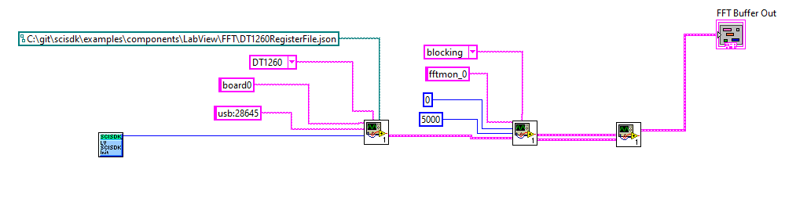

The FFT (power spectrum) allows to interface with the FFT monitor and acquire magnitude and phase of the FFT in order to be able to calculate the power spectrcum.
In practical use, the FFT Monitor module is connected to the FFT module. The real and imaginary data calculated by the FFT is transferred to the PC. This driver, when configured as DECODED, internally converts the real/imaginary data into magnitude and phase. When configured as raw, it is possible to access the real and imaginary data directly.
The acquisition can be triggered by the first sample signal generated by the FFT module.
Parameters
The following parameters can be configured:
| Parameter | Acces Mode | Description | Default value |
| decimator | R/W | set x-axis decimation factor | 0 |
| auto_arm | R/W | set 1 to enable the auto arm feature | 1 |
| data_processing | R/W | set data processing mode: raw, decode | decode |
| acq_mode | R/W | set data processing mode: blocking, non-blocking | blocking |
| timeout | R/W | set timeout for blocking acquisition in ms | 5000 |
| buffer_type | R | get buffer type: SCISDK_OSCILLOSCOPE_RAW_BUFFER or SCISDK_OSCILLOSCOPE_DECODED_BUFFER | |
Decimation
Decimate the FFT in hardware. The DC component (first sample) is always preserved, than if the decimation is for example 1, the frequency resolution is 1/2 of the sampling frequency: the frequency 1 will be skipped, the 2 preserved and so on.
Acquisition Modes
Following acquisition modes are available:
- blocking mode waits for the acquisition to complete before returning from the ReadData function. The timeout can be set with the timeout parameter.
- non-blocking mode returns immediately from the ReadData function. If trigger does not occur within the timeout, the function returns NI_TIMEOUT
Auto Arm
The auto arm feature can be enabled with the auto_arm parameter. When enabled, the acquisition is automatically armed by the ReadData function.
Data Processing
The data processing mode can be set with the data_processing parameter. Following values are available:
- raw returns the raw data from the oscilloscope. The oscilloscope buffer is not decoded indeed the data is returned as it is stored in the oscilloscope memory.
- decode returns decoded data from the oscilloscope. The oscilloscpe buffer is decoded internally to the DLL
Commands
The following commands are available:
| Command | Description | Parameter |
| arm | if auto-arm is not enabled, arm the trigger of the oscillocope | |
| reset_read_valid_flag | reset the data ready flag | |
Output data Format
Raw Data
The data output structure is the following:
typedef struct {
uint32_t magic;
uint32_t *data;
uint64_t timecode;
struct {
uint32_t buffer_size;
uint32_t samples;
uint32_t channels;
} info;
FFT monitor raw data structure.
Definition: scisdk_defines.h:285
magic : magic number to identify the buffer type. It is set to SCISDK_OSCILLOSCOPE_RAW_BUFFER_MAGIC data : it's the array of the raw data. The data is stored in the fft memory as it is. Every "sample" is composed by two 32 bit words. The first word contains the real part of the sample, the second word contains the imaginary part of the sample.
| Raw Memory |
| Frequency 0 - RE |
| Frequency 0 - IM |
| Frequency 1 - RE |
| Frequency 1 - IM |
| ... |
| Frequency N - RE |
| Frequency N - IM |
The SciCompiler standard FFT module works in fixed point indeed the number should be considered as integer value (cast to in32_t). Power spectrum can be calculated as; sqrt(pow(re,2)+pow(im,2)) while the phase as: atan(im/re)
info : it contains information about the oscilloscope buffer. The fields are:
buffer_size : the size of the buffer in DWORDsamples : number of samples per channelchannels : the number of channels
Decoded
Data is returned in the user buffer in the following format:
typedef struct {
uint32_t magic;
double *mag;
double *ph;
uint64_t timecode;
struct {
uint32_t samples;
uint32_t channels;
} info;
FFT monitor decoded data structure.
Definition: scisdk_defines.h:269
magic : magic number to identify the buffer type. It is set to SCISDK_OSCILLOSCOPE_DECODE_BUFFER_MAGIC mag : phase value calculated with forumale sqrt(pow(re,2)+pow(im,2)) ph : phase value calculated with forumale atan(im/re) timecode : timecode of the acquisition
info : it contains information about the oscilloscope buffer. The fields are:
samples : the number of samples per channelchannels : the number of channels
Basic Examples
C
printf("Error allocating buffer\n");
return -1;
}
#define NI_OK
Definition: NIErrorCode.h:8
SCISDK_DLL_API int SCISDK_SetParameterString(char *Path, char *value, void *handle)
Set the value of a parameter for the specific SciCompiler Memory Mapped Component or route the value ...
SCISDK_DLL_API int SCISDK_AllocateBuffer(char *Path, T_BUFFER_TYPE buffer_type, void **buffer, void *handle)
Allocate a buffer to be used to store data from the board for the specific Memory Mapped Componet (os...
SCISDK_DLL_API int SCISDK_ReadData(char *Path, void *buffer, void *handle)
Read data from the board for the specific Memory Mapped Componet (oscilloscope, spectrum,...
@ T_BUFFER_TYPE_DECODED
Definition: scisdk_defines.h:230
C++
{c++}
sdk->SetParameter("board0:/MMCComponents/FFT_0.data_processing", "decode");
sdk->SetParameter("board0:/MMCComponents/FFT_0.acq_mode", "blocking");
SCISDK_FFT_DECODED_BUFFER *ob;
int res = sdk->AllocateBuffer("board0:/MMCComponents/FFT_0", T_BUFFER_TYPE_DECODED, (void**)&ob);
if (res != NI_OK) {
cout << "Error allocating buffer" << endl;
return -1;
}
sdk->ReadData("board0:/MMCComponents/FFT_0", (void *)ob);
Python
sdk.SetParameterInteger("board0:/MMCComponents/FFT_0.decimator", 0)
sdk.SetParameterString("board0:/MMCComponents/FFT_0.acq_mode", "blocking")
res, buf = sdk.AllocateBuffer("board0:/MMCComponents/FFT_0")
res, buf = sdk.ReadData("board0:/MMCComponents/FFT_0", buf)
if (res == 0) {
# do something with the buffer
}
C Sharp
sdk.SetParameter("board0:/MMCComponents/FFT_0.data_processing","decode");
sdk.SetParameter("board0:/MMCComponents/FFT_0.acq_mode", "blocking");
// allocate buffer
SciSDKFFTDecodedBuffer buffer;
buffer = new SciSDKOscilloscopeDecodedBuffer();
sdk.AllocateBuffer("board0:/MMCComponents/FFT_0", BufferType.BUFFER_TYPE_DECODED, ref buffer);
if (sdk.ReadData("board0:/MMCComponents/FFT_0", ref buffer) == 0)
{
// do something with the buffer
}
VB.NET
sdk.SetParameter("board0:/MMCComponents/FFT_0.data_processing","decode")
sdk.SetParameter("board0:/MMCComponents/FFT_0.acq_mode", "blocking")
'allocate buffer
dim buffer as SciSDKFFTDecodedBuffer
sdk.AllocateBuffer("board0:/MMCComponents/FFT_0", BufferType.BUFFER_TYPE_DECODED, buffer)
if (sdk.ReadData("board0:/MMCComponents/FFT_0", buffer) == 0)
{
'do something with the buffer
}
JAVA
int res = sdk.SetParameter("board0:/MMCComponents/FFT_0.data_processing","decode");
sdk.SetParameter("board0:/MMCComponents/FFT_0.acq_mode", "blocking");
Ref<FFTDecodedBuffer> buf = new Ref<>(new FFTDecodedBuffer());
res = sdk.AllocateBuffer("board0:/MMCComponents/FFT_0", buf);
if(res == 0) {
}
Labview

You can find the labview file for this example here
Additional Examples
Non blocking mode
int timeout = 10000;
{
timeout -= 10;
} else {
Sleep(10);
}
}
#define NI_TIMEOUT
Definition: NIErrorCode.h:40
Processing decoded data and store in a file
The following example shows how to process the decoded data and store it in a file. The data is stored in a CSV file with the following format: Phase, Magnitude
FILE *fp = fopen("fft.csv", "w");
fprintf(fp, "Phase, Magnitude\n");
for (int i = 0; i < ob->num_samples; i++) {
fprintf(fp, "%f, %f\n", ob->phase[i], ob->magnitude[i]);
}
fclose(fp);
Processing raw data and store in a file
The following example shows how to process the raw data and store it in a file. The data is stored in a CSV file with the following format: real, imaginary
FILE *fp = fopen("fft.csv", "w");
fprintf(fp, "real, imaginary\n");
for (int i = 0; i < ob->num_samples; i++) {
fprintf(fp,
"%f, %f\n", ob->
data[i*2], ob->
data[i*2+1]);
}
fclose(fp);
@ T_BUFFER_TYPE_RAW
Definition: scisdk_defines.h:229
uint32_t * data
Definition: scisdk_defines.h:287